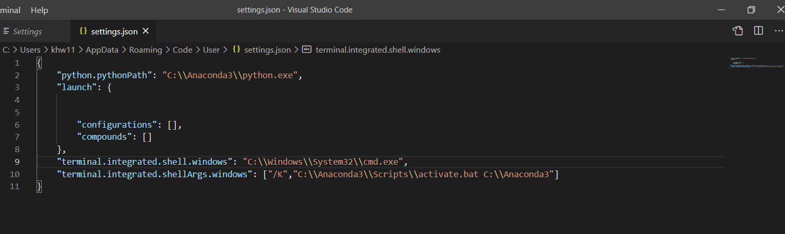
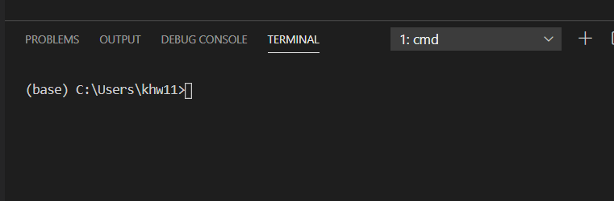

개발을 위한 컴퓨터 세팅
in etc on Etc
개요
구글 드라이브 폴더 설치, 아나콘다 설치, 비주얼 스튜디오 코드 설치, Visual Studio code와 Anaconda 터미널 연동
글을 쓰게된 이유
깃허브 블로그(Github Pages)를 개설한 이후 슬슬 노트북을 정리할 때라고 생각했다. 필자는 학교생활하면서 항상 한학기가 끝나면 노트북 포멧을 하였다. 사실 포멧을 평생해본적이 없다가 (무서워서) 학교생활을 하면서 주변에서 동기들이 여유있을때 포멧을 한다고해서 학기가 끝나고 포멧을 처음 하게된 이후 반년마다 포멧을 하는 편이다.
포멧이 두려운 이유는 노트북에 중요한 파일들을 날릴수 있다는 생각이 가장 큰데 이번 포스팅을 통해 파일관리 팁과 포멧에 두려움을 같이 극복하고자 글을 쓴다 또한 포멧이후 다시 각종 프로그램들을 다운받으면서 환경설정을 찾아가면서 정해주는것이 싫어서 적어두기위함도 있다. 각종 블로그들은 아나콘다 설치 게시물 따로 비주얼 스튜디오 코드 설치 게시물 따로되어있어서 한꺼번에 보기위함도 있다. 이런 편리함과 팁을 공유하기위해 글을 쓰게 되었다.
윈도우 포멧
 위 그림과 같이 윈도우 아이콘에 설정 아이콘을 누릅니다.
위 그림과 같이 윈도우 아이콘에 설정 아이콘을 누릅니다.
 업데이트 보안을 클릭
업데이트 보안을 클릭
 이 PC 초기화의 시작 버튼을 누릅니다.
이 PC 초기화의 시작 버튼을 누릅니다.
 옵션 선택은 모든 항목제거를 선택 합니다.
옵션 선택은 모든 항목제거를 선택 합니다.
쭉쭉 진행하면 결국 포멧이 됩니다.
구글드라이브
하지만 포멧을 하기전에!!!
현재 로컬의 파일들을 안전한곳에 옮겨놔야할것이다. 하지만 외부저장 장치가 없고 파일 옮기는 것이 귀찮다면 이런 포멧하는 행위가 굉장히 하기 싫게 된다.
만약 파일들을 생성할때마다 클라우드에 넣어놓는다면 언제 어디서든 내 노트북 내 데탑이 아닌곳에서 내 장치의 파일들을 쉽게 가져올수 있을것이다.
구글드라이브는 웹에서 관리할수 있지만 일반 폴더처럼 관리할수 있다.


위 그림처럼 구글 드라이브가 연동된 폴더라는 것을 알수 있다.
본인은 이렇게 구글 드라이브를 통해서 데이터들을 백업해둔다. 마찬가지로 OneDrive를 통해서도 데이터를 클라우드로 관리를 하는데 문제는 개인 개정이 무료계정(일반계정)이면 용량이 제한이 있다.
하지만!!
학생계정이 있다면 무제한으로 사용할수 있다.
대학교 메일주소를 통해 구글 로그인을 해서 확인해 보자.
이제 구글드라이브 폴더를 다운받아보자. Google
위 링크로 들어가 아래로 조금 내리면 아래와 같은 화면을 볼수 있다.

이중 개인용으로 다운로드한다.

installer가 설치되었다.

installer를 통해 구글 드라이브 설치를 진행한다.
대학교 계정으로 로그인을 한다.
 백업할 폴더를 선택할때 데스크톱, 문서, 사진을 선택하면 자동으로 백업이된다.
백업할 폴더를 선택할때 데스크톱, 문서, 사진을 선택하면 자동으로 백업이된다.
자동으로 백업하게되면 따로 관리하지않아도 데이터들이 백업되어 노트북을 잃어버리거나 데이터를 갑자게 잃게되는 경우를 방지할수 있을것이다.
하지만 내가 원하지 않는 데이터도 마구잡이로 백업이되고 모든 데이터를 정제되지않고 백업되어 많은 데이터가 백업작업이 수행되므로 느려진다.
따라서 백업할 폴더 선택을 모두 선택하지않는다.
내가 필요할때만 직접 구글 드라이브 폴더에 넣어줄것이다.
 구글 드라이브 위치는 저대로 진행하면 나중에 바탕화면에 구글드라이브 폴더가 생성된다.
구글 드라이브 위치는 저대로 진행하면 나중에 바탕화면에 구글드라이브 폴더가 생성된다.
내 드라이브의 모든 항목 동기화를 해주어 드라이브에 있는 모든 폴더와 데이터들을 관리할수 있다.
이제 웹을 실행하지않고 바로 폴더로 클라우드 드라이브에서 데이터를 관리할수 있다.
이제 필요한 데이터들을 구글드라이브에 넣어 초록색 체크가 될때까지 기다린뒤 포멧을 진행한다.
아나콘다 설치
개인적으로 아나콘다를 왜 설치해야하냐고 묻는다면 나도 처음에 왜 설치하는지 모르고 하라고 해서 하게 되었다.
하지만 나중에 파이썬 설치폴더에서 가상환경을 만들고하는것보다 아나콘다로 가상환경을 만들고 관리하는게 더 편하다는 것을 알게되었다. 다른 장점이나 이유는 잘 모르겠다.
가상환경을 만들기 편해서, 관리하기 좋아서!
그럼 가상환경이 무엇이가 왜 가상환경을 만들어야 할까?
하나의 환경에서 이것저것 설치하면 서로 꼬이고 충돌해서 라이브러리를 지우고 다시 설치하고 버전을 업그레이드 업데이트해줘야한다. 프로젝트별로 가상환경을 만들어줘서 내가 원하는 환경을 세팅해놓으면 이런 번거로운 일을 안해도 된다.
아래 링크에 접속하여 아나콘다 installer를 다운 받는다.
https://www.anaconda.com/products/individual
 다운로드 버튼을 누른다. 그럼 아래 사진과 같은 페이지로 이동한다.
다운로드 버튼을 누른다. 그럼 아래 사진과 같은 페이지로 이동한다.
 윈도우 64bit로 다운
윈도우 64bit로 다운
 다운로드 폴더에서 installer를 실행한다.
다운로드 폴더에서 installer를 실행한다.
 쭉 Next를 해준다.
쭉 Next를 해준다.
 All Users에 체크를 한다.
All Users에 체크를 한다.
 저장위치는 C드라이브 바로 하위에 둔다 설정하거나 관리하기 편하다.
저장위치는 C드라이브 바로 하위에 둔다 설정하거나 관리하기 편하다.
 그대로 Next
그대로 Next
 설치가 진행된다.
설치가 진행된다.
나머지는 쭉쭉 next하고 마지막에 finish를 하면 설치 완료이다.

Visual Studio Code 설치
비주얼 스튜디오 코드(영어: Visual Studio Code)는 마이크로소프트가 마이크로소프트 윈도우, macOS, 리눅스용으로 개발한 소스 코드 편집기이다.
그중 개인적으로 파이썬 코드를 다룰때 편한거 같다. 디버깅이나 터미널 실행, 폴더, 파일관리 무엇보다 빠른 프로그램 실행이 좋다. 파이참 같은 경우는 파일여는데 너무 오래 걸리지만 비주얼 코드는 바로 열린다는점이 너무 좋다.
또한 따로 git을 설치할 필요가 없다
아래 링크에 접속한다.
https://code.visualstudio.com/download
 Window 버튼을 누르면 된다.
Window 버튼을 누르면 된다.
 동의합니다를 체크하고 다음을 클릭
동의합니다를 체크하고 다음을 클릭
 아마 PATH에 추가는 처음부터 체크가 되어있을것이다.
아마 PATH에 추가는 처음부터 체크가 되어있을것이다.
+Code로 열기 작업을 Windows 탐색기 디렉터리의 상황에 맞는 메뉴에 추가를 체크해준다.
그러면 아래 사진과 같이 작업을 하는 코드들이 들어있는 폴더에 우클릭을 하면 그 폴더에 있는 파일들을 모두 비주얼 코드에서 볼수 있다.

 마지막으로 설치버튼을 누르면 설치가 완료된다.
마지막으로 설치버튼을 누르면 설치가 완료된다.
Visual Studio Code 터미널에 아나콘다 가상환경 연동
처음에는 멍청하게 아나콘다를 설치하라고 해서 하였고.
비주얼 스튜디오 코드를 설치하라고 해서 하였다.
근데 비주얼 스튜디오 코드로 코드를 짜고 디버깅을 할때 아나콘다 가상환경으로 하면서 디버깅하기는 편한데 터미널을 열고 아나콘다 base 가상환경에 못들어가 비주얼 코드로 코드를 짜고 아나콘다 프롬픔트를 열어서 실행하곤 했다.
따라서 비주얼 코드 터미널에서 바로 아나콘다 환경을 연동해주어서 base 가상환경을 base로 쉽게 가상환경을 넘나들수 있게 세팅할것이다.
비주얼 코드를 실행한다.
 위 그림처럼 가장 왼쪽 아이콘 중에 가장 아래쪽을 클릭하고 python을 검색 가장 위에 저 3개를 설치한다.
위 그림처럼 가장 왼쪽 아이콘 중에 가장 아래쪽을 클릭하고 python을 검색 가장 위에 저 3개를 설치한다.
 File - Preferences - Settings를 하고
File - Preferences - Settings를 하고
 검색창에 settings 또는 json 또는 terminal.integrated.shellArgs.windows를 검색하고
Edit in settings.json을 클릭한다.
검색창에 settings 또는 json 또는 terminal.integrated.shellArgs.windows를 검색하고
Edit in settings.json을 클릭한다.
 위 그림과 같이
{
"python.pythonPath": "C:\\Anaconda3\\python.exe",
"launch": {
"configurations": [],
"compounds": []
},
"terminal.integrated.shell.windows": "C:\\Windows\\System32\\cmd.exe",
"terminal.integrated.shellArgs.windows": [
"/K",
"C:\\Anaconda3\\Scripts\\activate.bat C:\\Anaconda3"
]
}
를 입력하여 세팅합니다.
 터미널을 열면 바로 (base)가 뜨는것을 볼수 있습니다.